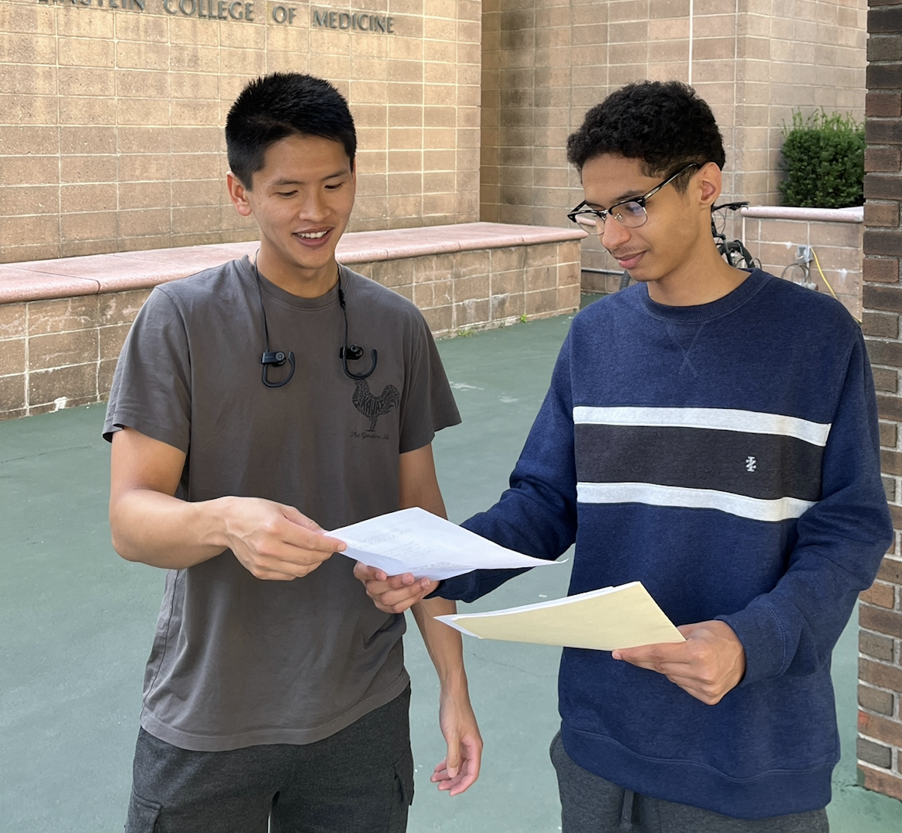

Our local Stop & Shop at 1745 Eastchester Road has been closed for several years, leaving residents, students, and families without easy access to fresh food and essential supplies. Traveling farther to shop is inconvenient, time-consuming, and often costly. Students without cars, elderly residents, and families with young children are particularly affected. Beyond these practical difficulties, the absence of a local grocery store has impacted the neighborhood’s social and economic life. Grocery stores are community hubs, meeting points, and sources of local economic activity. This campaign aims to bring back the store not only as a grocery but as a central place that strengthens our community.
Personal Motivation
I’m Mahfoudh Senhoruy, 23 years old, a resident and student at Lehman College. Grocery shopping has always been challenging for me, and it’s even harder for students at nearby campuses like Albert Einstein College of Medicine. On August 22, 2025, I created a flyer with a Google Form petition and handed it out on campus. By the next day, we had over 90 responses, showing that this is an issue affecting many students and residents. Seeing such strong support confirmed the community genuinely cares about having access to fresh food and is ready to join this campaign.
Why It Was Closed
According to reports and local conversations, the Stop & Shop closed due to structural issues like leaks, flooding, and high maintenance costs, which made the business unsustainable. The lot has been empty for over three years, affecting residents’ access to groceries and local economic activity. Additionally, there are reports that Montefiore Hospital may be interested in the property for a “north station,” which could attract wealthier residents but also risk displacing long-time community members.
Research shows that limited access to full-service supermarkets is a common challenge in the Bronx, creating so-called 'food deserts.' Residents rely on smaller stores or travel long distances for fresh produce, impacting health, budgets, and neighborhood vitality. Reopening the Stop & Shop would help address this issue. Fordham Political Review: Food Deserts in the Bronx
Programs like the NYC FRESH initiative offer tax incentives and zoning support to encourage grocery store development in underserved areas. With city programs and community support, reopening Stop & Shop is feasible. NYC Department of City Planning: FRESH Program
Recent news also highlights plans for the lot’s redevelopment: CommercialSearch: Former NYC Supermarket Lot
Our Community Lot
The highlighted area shows where our lot is located. This area is not eligible for NYC FRESH incentives, making it harder to bring a grocery store here — which is why community support is crucial.
Our Plan
We are organizing, researching, and advocating to bring Stop & Shop back. This includes hosting community meetings to discuss the need for a grocery, exploring incentives to attract businesses, researching how to secure the lease, and planning funding strategies. So far, we’ve collected around 129 petition responses from the school alone, and we will continue outreach throughout the neighborhood to demonstrate real community demand. The ultimate goal is to restore a sustainable grocery store that serves the entire community.
How You Can Help
Your support is crucial. Donations help fund campaign activities, including flyers, meetings, coordination with leaders, and research. Every contribution, big or small, keeps this movement alive.
Donate Now